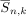
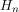
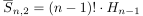
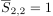
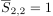
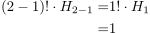
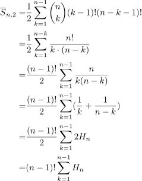

Stirling Zahl erster Art und harmonische Zahlen
1. Satz
Sei  die Stirling Zahl erster Art und  die Harmonische Zahl, dann gilt

1
2. Beweis
2.1. a)
2.1.1. IA
für  gilt  und
gilt  und

2
2.1.2. IS
2.2. b)
Alternativ durch eine Kombinatorische Betrachtung:

5